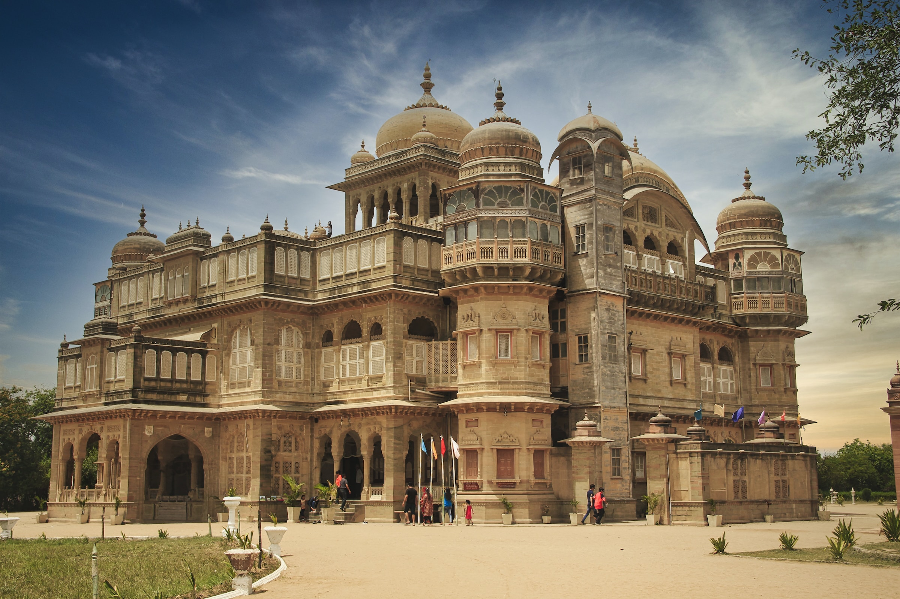
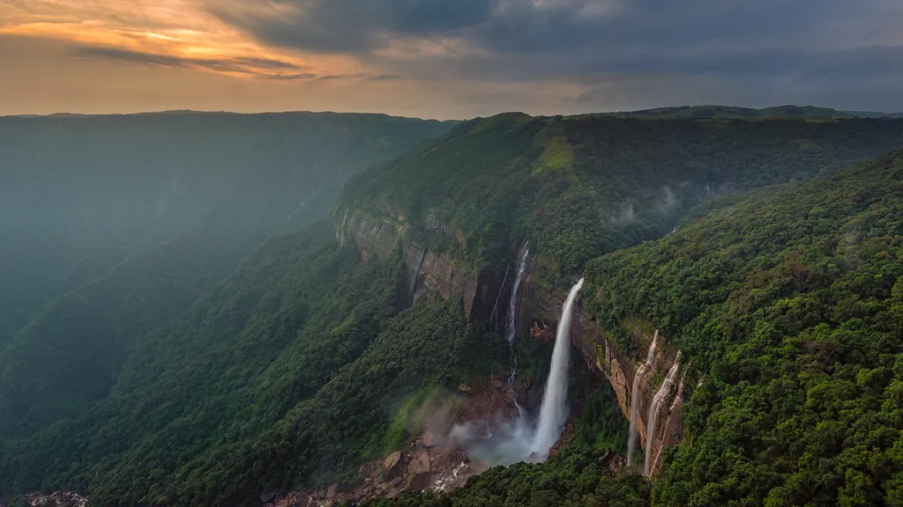
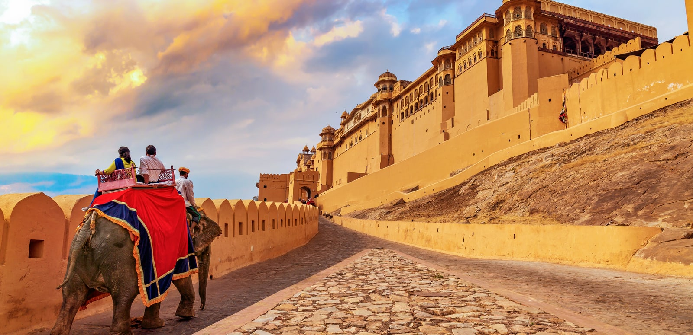

Tourism in India is a significant and diverse industry that attracts millions of visitors from around the world each year. India's rich cultural heritage, historical landmarks, diverse landscapes, and vibrant traditions make it a popular destination for tourists seeking a wide range of experiences
Best tour Packages offers for you

The Gateway of India is a monumental arch located in Mumbai (formerly known as Bombay), Maharashtra, India. It is one of Mumbai's most famous landmarks and a significant historical site.The Gateway of India was built during the British colonial period in India and was completed in 1924. It was designed to commemorate the landing of King George V and Queen Mary in Mumbai in 1911, as well as to symbolize the grandeur of the British Empire.The architectural style of the Gateway of India is Indo-Saracenic, which blends elements of Indian and Islamic architecture with European styles.

The Howrah Bridge also known as Rabindra Setu, is an iconic bridge in Kolkata, India. It's a marvel of engineering that spans the Hooghly River, connecting Kolkata with Howrah. The bridge has a unique design with no piers in the water, allowing smooth navigation. It's made of strong steel and was built without nuts and bolts, using rivets.The Howrah Bridge is not just a means of transportation but a symbol of Kolkata's identity. It's famous for its pedestrian walkways on both sides, offering stunning views of the river and the city. The bridge has appeared in movies and art, making it a cultural landmark.

The Kerala Backwaters are a network of serene waterways, canals, lakes, and lagoons that meander through the southwestern state of Kerala, India. This unique and tranquil landscape is often referred to as the "Venice of the East." The backwaters are an integral part of Kerala's culture and are known for their breathtaking beauty and peaceful ambiance. The backwaters offer a distinct travel experience, allowing visitors to explore the lush greenery, coconut groves, paddy fields, and small villages that dot the water's edge.

Ladakh is a region located in the northernmost part of India, nestled amidst the towering peaks of the Himalayas and the Karakoram Range. Often referred to as the "Land of High Passes," Ladakh is known for its breathtaking landscapes, ancient monasteries, and unique cultural heritage.Iconic natural attractions in Ladakh include Pangong Lake, a shimmering blue lake surrounded by barren mountains; Nubra Valley, known for its sand dunes and double-humped Bactrian camels; and the Khardung La Pass, one of the highest motorable passes in the world.